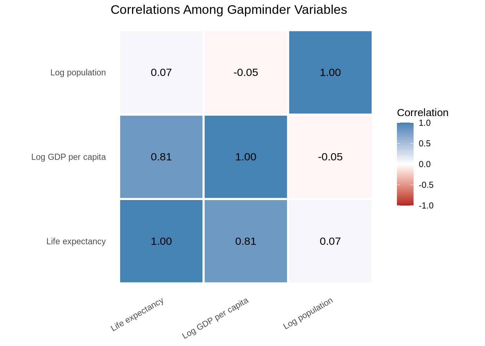

library(tidyverse)
library(scales)
library(janitor)
library(tinytable)
library(modelsummary)
library(corrr)9 Tables
Counts, summaries, publication tables, and export
Tables are part of a visualization workflow. A plot is often the fastest way to show a pattern, but a table is often the clearest way to show exact values, counts, summaries, and compact descriptions of a dataset.
Table or plot? Use a plot when the reader needs to grasp a shape — a trend, a distribution, a cluster. Use a table when the reader needs to look up a specific number, compare exact values across categories, or read a ranked list. The two formats are complements, not competitors.
This chapter starts with quick exploratory tables and then moves toward tables that belong in reports, slides, papers, and appendices.
9.1 Which tool for which table
R has several strong table packages. A quick orientation before diving in:
- Base R
table()— quick Console frequency counts; no dependencies. janitor::tabyl()— counts, percentages, totals, and crosstabs in tidy pipelines.tinytable— compact publication-style display; works across HTML, PDF, and Word.modelsummary— descriptive summaries and formatted crosstabs.gt— highly designed HTML tables with fine-grained cell control.flextable— Word output as the primary target.DT— interactive search and pagination in HTML output.
You do not need all of them. The choice depends on what kind of table you need: quick exploration, descriptive summary, publication display, or interactive browsing.
9.2 A first frequency table
Base R has a built-in function called table(). It counts how often each value appears.
table(mtcars$cyl)
4 6 8
11 7 14 This table counts the number of cars in mtcars with 4, 6, and 8 cylinders.
A two-way table counts combinations of two variables.
table(mtcars$cyl, mtcars$gear)
3 4 5
4 1 8 2
6 2 4 1
8 12 0 2The output is useful, but the labels are not very descriptive. We can improve the row and column labels before printing the table.
cylinders_gear <- table(mtcars$cyl, mtcars$gear)
dimnames(cylinders_gear) <- list(
"Cylinders" = paste(rownames(cylinders_gear), "cyl"),
"Gears" = paste(colnames(cylinders_gear), "gears")
)
cylinders_gear Gears
Cylinders 3 gears 4 gears 5 gears
4 cyl 1 8 2
6 cyl 2 4 1
8 cyl 12 0 2Base R tables are dependable and fast. They are especially useful when you are exploring data in the Console. For tables that will appear in a report, other packages give us cleaner formatting and easier percentages.
9.3 Cleaner crosstabs with janitor
The janitor package has a function called tabyl(). It behaves like a modern version of table(): it counts values, keeps the output as a data frame, and works well in tidyverse pipelines.
We will use a local copy of the Gapminder data.
The function glimpse() comes from dplyr, which is loaded as part of the tidyverse.
gapminder <- readr::read_csv("Data/gapminder/gapminder.csv")
glimpse(gapminder)Rows: 1,704
Columns: 6
$ country <chr> "Afghanistan", "Afghanistan", "Afghanistan", "Afghanistan", …
$ continent <chr> "Asia", "Asia", "Asia", "Asia", "Asia", "Asia", "Asia", "Asi…
$ year <dbl> 1952, 1957, 1962, 1967, 1972, 1977, 1982, 1987, 1992, 1997, …
$ lifeExp <dbl> 28.801, 30.332, 31.997, 34.020, 36.088, 38.438, 39.854, 40.8…
$ pop <dbl> 8425333, 9240934, 10267083, 11537966, 13079460, 14880372, 12…
$ gdpPercap <dbl> 779.4453, 820.8530, 853.1007, 836.1971, 739.9811, 786.1134, …A one-variable tabyl() gives counts and proportions.
gapminder |>
tabyl(continent)A two-variable tabyl() gives a crosstab.
gapminder |>
tabyl(continent, year)This table counts country-year observations by continent and year. A different kind of crosstab uses a category we create ourselves. Here we classify countries by whether life expectancy in 2007 was at least 70 years.
gapminder_2007 <- gapminder |>
filter(year == 2007) |>
mutate(
life_expectancy_group = if_else(lifeExp >= 70, "70 years or more", "Under 70 years")
)
gapminder_2007 |>
tabyl(continent, life_expectancy_group)The adorn_*() functions add totals, percentages, and count labels.
gapminder_2007 |>
tabyl(continent, life_expectancy_group) |>
adorn_totals(c("row", "col")) |>
adorn_percentages("row") |>
adorn_pct_formatting(digits = 1) |>
adorn_ns()Use row percentages when the row categories are your comparison groups. In this case, the question is: within each continent, what share of countries had life expectancy of at least 70 years?
Column percentages answer a different question.
gapminder_2007 |>
tabyl(continent, life_expectancy_group) |>
adorn_totals(c("row", "col")) |>
adorn_percentages("col") |>
adorn_pct_formatting(digits = 1) |>
adorn_ns()Here the question is: within each life expectancy group, what share of countries came from each continent?
tabyl() can extend to a third variable. The result is a list of two-way tables, one for each value of the third variable — useful for showing how a crosstab changes across time or groups.
gapminder |>
filter(year %in% c(1952, 2007)) |>
mutate(
life_expectancy_group = if_else(lifeExp >= 70, "70 years or more", "Under 70 years")
) |>
tabyl(continent, life_expectancy_group, year)$`1952`
continent 70 years or more Under 70 years
Africa 0 52
Americas 0 25
Asia 0 33
Europe 5 25
Oceania 0 2
$`2007`
continent 70 years or more Under 70 years
Africa 7 45
Americas 22 3
Asia 22 11
Europe 30 0
Oceania 2 0If the three-way result feels dense, split it into separate tables or make a faceted plot instead.
9.4 From summarize to table
A common workflow is to compute a summary with group_by() and summarize() and then format the result as a display table. The two steps are separate: the first produces a data frame, the second formats it.
continent_summary <- gapminder |>
filter(year == 2007) |>
group_by(continent) |>
summarize(
countries = n(),
median_life = median(lifeExp),
median_gdp = median(gdpPercap)
)
continent_summaryPass the result directly to tt() for a formatted table. Rename the columns before calling tt() so the display names are readable.
continent_summary |>
rename(
"Continent" = continent,
"Countries" = countries,
"Median life expectancy" = median_life,
"Median GDP per capita" = median_gdp
) |>
tt(
caption = "Summary statistics by continent, 2007",
digits = 1
)| Continent | Countries | Median life expectancy | Median GDP per capita |
|---|---|---|---|
| Africa | 52 | 53 | 1452 |
| Americas | 25 | 73 | 8948 |
| Asia | 33 | 72 | 4471 |
| Europe | 30 | 79 | 28054 |
| Oceania | 2 | 81 | 29810 |
Renaming columns in the data frame before calling tt() is the most reliable way to control display names across output formats.
9.5 Reshaping for tables
Long-format data is easy to compute on but often hard to read as a table. A summary grouped by two variables — say, continent and year — has one row per combination, which makes for a long, narrow table.
life_by_year <- gapminder |>
filter(year %in% c(1957, 1977, 1997, 2007)) |>
group_by(continent, year) |>
summarize(median_life = median(lifeExp), .groups = "drop")
life_by_yearThe same continent appears in four rows. Pivot year into columns to put a continent’s trajectory in one row.
life_by_year |>
pivot_wider(names_from = year, values_from = median_life) |>
rename("Continent" = continent) |>
tt(
caption = "Median life expectancy by continent, selected years",
digits = 1
)| Continent | 1957 | 1977 | 1997 | 2007 |
|---|---|---|---|---|
| Africa | 41 | 49 | 53 | 53 |
| Americas | 56 | 66 | 72 | 73 |
| Asia | 48 | 61 | 70 | 72 |
| Europe | 68 | 72 | 76 | 79 |
| Oceania | 70 | 73 | 78 | 81 |
Long format is right for computation and ggplot; wide format is often right for display.
9.6 Formatting numbers
Raw R numbers — 1234.5678, 0.043, 1.23e+09 — are often not the right form for a published table. The scales package provides helpers that turn numbers into currency, percentages, comma-separated thousands, and other common formats. Apply them with mutate() before passing the data frame to a display function.
continent_summary |>
mutate(
countries = comma(countries),
median_life = number(median_life, accuracy = 0.1),
median_gdp = comma(median_gdp, accuracy = 1)
) |>
rename(
"Continent" = continent,
"Countries" = countries,
"Median life expectancy" = median_life,
"Median GDP per capita" = median_gdp
) |>
tt(caption = "Summary statistics by continent, 2007")| Continent | Countries | Median life expectancy | Median GDP per capita |
|---|---|---|---|
| Africa | 52 | 52.9 | 1,452 |
| Americas | 25 | 72.9 | 8,948 |
| Asia | 33 | 72.4 | 4,471 |
| Europe | 30 | 78.6 | 28,054 |
| Oceania | 2 | 80.7 | 29,810 |
A few common formatters from scales:
dollar()— currency with$and commaspercent()— multiplies by 100 and appends%comma()— comma-separated thousandsnumber(accuracy = 0.1)— controls decimal places
Formatting in the data frame works across any table package. As an alternative, tinytable::format_tt() formats inside the table object while keeping the underlying column numeric.
9.7 Publication-style data tables with tinytable
tinytable is useful when the table needs to look good in a document. It starts with a data frame and returns a formatted table.
vehicle_sample <- mtcars |>
rownames_to_column("car") |>
slice_sample(n = 6) |>
select(car, mpg, cyl, disp, hp, wt)
tt(vehicle_sample)| car | mpg | cyl | disp | hp | wt |
|---|---|---|---|---|---|
| Toyota Corona | 21.5 | 4 | 120.1 | 97 | 2.465 |
| Lotus Europa | 30.4 | 4 | 95.1 | 113 | 1.513 |
| Chrysler Imperial | 14.7 | 8 | 440.0 | 230 | 5.345 |
| Dodge Challenger | 15.5 | 8 | 318.0 | 150 | 3.520 |
| Honda Civic | 30.4 | 4 | 75.7 | 52 | 1.615 |
| Camaro Z28 | 13.3 | 8 | 350.0 | 245 | 3.840 |
Add a caption and format the numbers.
tt(
vehicle_sample,
caption = "A Small Sample of Vehicle Characteristics",
digits = 1
)| car | mpg | cyl | disp | hp | wt |
|---|---|---|---|---|---|
| Toyota Corona | 22 | 4 | 120 | 97 | 2 |
| Lotus Europa | 30 | 4 | 95 | 113 | 2 |
| Chrysler Imperial | 15 | 8 | 440 | 230 | 5 |
| Dodge Challenger | 16 | 8 | 318 | 150 | 4 |
| Honda Civic | 30 | 4 | 76 | 52 | 2 |
| Camaro Z28 | 13 | 8 | 350 | 245 | 4 |
You can add notes to explain the data source or a measurement choice.
tt(
vehicle_sample,
caption = "A Small Sample of Vehicle Characteristics",
digits = 1,
notes = "Data are from the built-in mtcars dataset."
)| car | mpg | cyl | disp | hp | wt |
|---|---|---|---|---|---|
| Data are from the built-in mtcars dataset. | |||||
| Toyota Corona | 22 | 4 | 120 | 97 | 2 |
| Lotus Europa | 30 | 4 | 95 | 113 | 2 |
| Chrysler Imperial | 15 | 8 | 440 | 230 | 5 |
| Dodge Challenger | 16 | 8 | 318 | 150 | 4 |
| Honda Civic | 30 | 4 | 76 | 52 | 2 |
| Camaro Z28 | 13 | 8 | 350 | 245 | 4 |
You can also style headers and selected cells.
tt(vehicle_sample, digits = 1) |>
style_tt(i = 0, color = "white", background = "steelblue", fontweight = "bold") |>
style_tt(i = 2, j = 4, background = "lightyellow")| car | mpg | cyl | disp | hp | wt |
|---|---|---|---|---|---|
| Toyota Corona | 22 | 4 | 120 | 97 | 2 |
| Lotus Europa | 30 | 4 | 95 | 113 | 2 |
| Chrysler Imperial | 15 | 8 | 440 | 230 | 5 |
| Dodge Challenger | 16 | 8 | 318 | 150 | 4 |
| Honda Civic | 30 | 4 | 76 | 52 | 2 |
| Camaro Z28 | 13 | 8 | 350 | 245 | 4 |
Column groups help when several variables belong together.
tt(vehicle_sample, digits = 1) |>
group_tt(
j = list(
"Identity" = 1,
"Engine and Performance" = 2:6
)
)| Identity | Engine and Performance | ||||
|---|---|---|---|---|---|
| car | mpg | cyl | disp | hp | wt |
| Toyota Corona | 22 | 4 | 120 | 97 | 2 |
| Lotus Europa | 30 | 4 | 95 | 113 | 2 |
| Chrysler Imperial | 15 | 8 | 440 | 230 | 5 |
| Dodge Challenger | 16 | 8 | 318 | 150 | 4 |
| Honda Civic | 30 | 4 | 76 | 52 | 2 |
| Camaro Z28 | 13 | 8 | 350 | 245 | 4 |
9.8 Conditional formatting
A table reads faster when extreme values stand out. tinytable::style_tt() accepts row and column indices to apply background colors, font weights, and other styles. Combine it with which.max() and which.min() to color cells based on the data itself.
wide_life <- life_by_year |>
pivot_wider(names_from = year, values_from = median_life) |>
rename("Continent" = continent)
highest_2007 <- which.max(wide_life[["2007"]])
lowest_2007 <- which.min(wide_life[["2007"]])
tt(
wide_life,
digits = 1,
caption = "Highest and lowest continent in 2007 highlighted"
) |>
style_tt(i = highest_2007, background = "#cde7c2") |>
style_tt(i = lowest_2007, background = "#f7c8c2")| Continent | 1957 | 1977 | 1997 | 2007 |
|---|---|---|---|---|
| Africa | 41 | 49 | 53 | 53 |
| Americas | 56 | 66 | 72 | 73 |
| Asia | 48 | 61 | 70 | 72 |
| Europe | 68 | 72 | 76 | 79 |
| Oceania | 70 | 73 | 78 | 81 |
Highlighting works best when one or two values per table need attention. Past three or four, the colors compete with each other and the reader loses the cue.
9.9 Summary tables with modelsummary
The modelsummary package includes useful functions for descriptive statistics. The function datasummary_skim() comes from modelsummary.
gapminder_2007 |>
select(continent, lifeExp, gdpPercap) |>
datasummary_skim()| Unique | Missing Pct. | Mean | SD | Min | Median | Max | Histogram | |
|---|---|---|---|---|---|---|---|---|
| lifeExp | 142 | 0 | 67.0 | 12.1 | 39.6 | 71.9 | 82.6 | ![](data:image/png;base64, iVBORw0KGgoAAAANSUhEUgAABLAAAAGQCAMAAACJa2lsAAAAjVBMVEUAAAAaGhobGxsgICAsLCw1NTU3Nzc9PT1AQEBCQkJISEhLS0tNTU1QUFBRUVFVVVVWVlZaWlpbW1tiYmJmZmZnZ2doaGhpaWlqampvb29wcHB2dnZ3d3d4eHiDg4OIiIiMjIyfn5+hoaGmpqa2trbT09PY2Nja2trd3d3o6Ojs7Ozw8PDx8fH4+Pj////qhvmWAAAJBElEQVR4nO3cR5bbVgBE0XaOsmzLUZJzTr3/5XkkT83SgVBd5L0b+GQBfCMQd/cAI+7aHwDgUoIFzBAsYIZgATMEC5ghWMAMwQJmCBYwQ7CAGYIFzBAsYIZgATMEC5ghWJD6+5vnp/rJJXpBsCD16925PnCJXhAsSAlWjWBBSrBqBAtSglUjWJASrBrBgpRg1QgWpASrRrAgJVg1ggUpwaoRLEgJVo1gQUqwagQLUoJVI1iQEqwawYKUYNUIFqQEq0awICVYNYIFKcGqESxICVaNYEFKsGoEC1KCVSNYkBKsGsGClGDVCBakBKtGsCAlWDWCBSnBqhEsSAlWjWBBSrBqBAtSglUjWJASrBrBgpRg1QgWpASrRrAgJVg1ggUpwaoRLEgJVo1gQUqwagQLUoJVI1iQEqwawYKUYNUIFqQEq0awICVYNYIFKcGqESxICVaNYEFKsGoEC1KCVSNYkBKsGsGClGDVCBakBKtGsCAlWDWCBSnBqhEsSAlWjWBBSrBqBAtSglUjWJASrBrBgpRg1QgWpASrRrAgJVg1ggUpwaoRLEgJVo1gQUqwagQLUoJVI1iQEqwawYKUYNUIFqQEq0awICVYNYIFKcGqESxICVaNYEFKsGoEC1KCVSNYkBKsGsGClGDVCBakBKtGsCAlWDWCBSnBqhEsSAlWjWBBSrBqBAseerDe+OxU3z/gO0Kw4KEH62TvPOA7QrAgdeXBevcB3xGCBSnBqhEsSAlWjWBBSrBqBAtSglUjWJASrBrBgpRg1QgWpASrRrAgJVg1ggUpwaoRLEgJVo1gQUqwagQLUoJVI1iQEqwawYKUYNUIFqQEq0awICVYNYIFKcGqESxICVaNYEFKsGoEC1KCVSNYkBKsGsGClGDVCBakBKtGsCAlWDWCBSnBqhEsSAlWjWBBSrBqBAtSglUjWJASrBrBgpRg1QgWpASrRrAgJVg1ggUpwaoRLEgJVo1gQUqwagQLUoJVI1iQEqwawYKUYNUIFqQEq0awICVYNYIFKcGqESxICVaNYEFKsGoEC1KCVSNYkBKsGsGClGDVCBakBKtGsCAlWDWCBSnBqhEsSAlWjWBBSrBqBAtSglUjWJASrBrBgpRg1QgWpASrRrAgJVg1ggUpwaoRLEgJVo1gQUqwagQLUoJVI1iQEqwawYKUYNUIFqQEq0awICVYNYIFKcGqESxICVaNYEFKsGoEC1KCVSNYkBKsGsGClGDVCBakBKtGsCAlWDWCBSnBqhEsSAlWjWBBSrBqBAtSglUjWJASrBrBgpRg1QgWpASrRrAgJVg1ggUpwaoRLEgJVo1gQUqwagQLUoJVI1iQEqwawYKUYNUIFqQEq0awICVYNYIFKcGqESxICVaNYEFKsGoEC1KCVSNYkBKsGsGClGDVCBakBKtGsCAlWDWCBSnBqhEsSAlWjWBBSrBqBAtSglUjWJASrBrBgpRg1QgWpASrRrAgJVg1ggUpwaoRLEgJVo1gQUqwagQLUoJVI1iQEqwawYKUYNUIFqQEq0awICVYNYIFKcGqESxICVaNYEFKsGoEC1KCVSNYkBKsGsGClGDVCBakBKtGsCAlWDWCBSnBqhEsSAlWjWBBSrBqBAtSglUjWJASrBrBgpRg1QgWpASrRrAgJVg1ggUpwaoRLEgJVo1gQUqwagQLUoJVI1iQEqwawYKUYNUIFqQEq0awICVYNYIFKcGqESxICVaNYEFKsGoEC1KCVSNYkBKsGsGClGDVCBakBKtGsCAlWDWCBSnBqhEsSAlWjWBBSrBqBAtSglUjWJASrBrBgpRg1QgWpASrRrAgJVg1ggUpwaoRLEgJVo1gQUqwagQLUoJVI1iQEqwawYKUYNUIFqQEq0awICVYNYIFKcGqESxICVaNYEFKsGoEC1KCVSNYkBKsGsGClGDVCBakBKtGsCAlWDWCBakrD9brj0/1tWDBq3TlwTqbYIFgzRAsEKwZggWCNUOwQLBmCBYI1gzBAsGaIVggWDMEa8Ffv5/ql9/OPe+f+yvmOaxDJdN70r3ly7ur9uP9FROsQyXTC1bL53dX7Yf7KyZYh0qmF6wWwdolWIdKphesFsHaJViHSqYXrBbB2iVYh0qmF6wWwdolWIdKphesFsHaJViHSqYXrBbB2iVYh0qmF6wWwdolWIdKphesFsHaJViHSqYXrBbB2iVYh0qmF6wWwdolWIdKphesFsHaJViHSqYXrBbB2iVYh0qmF6wWwdolWIdKphesFsHaJViHSqYXrBbB2iVYh0qmF6wWwdolWIdKphes//x57juEP7m7al7gx6UE66V8ePHA/D/B4lKC9VI+uHhg/p9gcSnBEqw6weJSgiVYdYLFpQRLsOoEi0sJlmDVCRaXEizBqhMsLiVYglUnWFxKsASrTrC4lGAJVt1bj0/18/2Z/DXnUIIlWLfmW8HaJViCdWsEa5hgCdatEaxhgiVYt0awhgmWYN0awRomWIJ1awRrmGAJ1q0RrGGCJVi3RrCGXUuw/jj3ncXvta8bL0+whl1LsN5uD8kMwRp2LcF6tz0kMwRrWBIFweIaCNYwweLWCNYwweLWCNYwweLWCNYwweLWCNYwweLWCNYwweLWCNYwweLWvHnqC5nfb3/d6yJYwAzBAmYIFjBDsIAZggXMECxghmABMwQLmCFYwAzBAmYIFjBDsIAZggXMECxghmABMwQLmCFYwAzBAmYIFjBDsIAZggXMECxghmABMwQLmCFYwAzBAmYIFjBDsIAZggXMECxghmABMwQLmCFYwAzBAmYIFjBDsIAZggXMECxghmABMwQLmCFYwAzBAmYIFjBDsIAZggXMECxghmABMwQLmCFYwAzBAmYIFjBDsIAZggXMECxghmABMwQLmPHKgvXF41O91h4SGA7WCZ8duDH3ggWsECxghmABMwQLmCFYwAzBAmYIFjBDsIAZryxY3z0/1UfnHvfo2anHPX566nGffnXqcU+enHrcl5+eetzTj0897tmjq/7hfffKggXQJFjADMECZggWMEOwgBmCBcwQLGCGYAEzBAuYIVjADMECZggWMEOwgBmCBdyv+BcgZiEaS5x/EwAAAABJRU5ErkJggg==) |
| gdpPercap | 142 | 0 | 11680.1 | 12859.9 | 277.6 | 6124.4 | 49357.2 | ![](data:image/png;base64, iVBORw0KGgoAAAANSUhEUgAABLAAAAGQCAMAAACJa2lsAAAAbFBMVEUAAAAuLi44ODhLS0tQUFBRUVFVVVVWVlZbW1tfX19iYmJoaGhpaWlqampsbGxwcHB2dnZ3d3eIiIiZmZmenp6fn5+jo6Ourq6zs7O1tbW7u7vY2Njh4eHp6ent7e3u7u719fX4+Pj8/Pz////gXDQkAAAGpklEQVR4nO3W3ZIVNRSA0SMCjqAwc8QfBAGZ939H71Le0VTRSb7DWi+wk53qr/ryCBBxWX0AgKMEC8gQLCBDsIAMwQIyBAvIECwgQ7CADMECMgQLyBAsIEOwgAzBAm4zWNeHqa7nXRu4+WBdJjvv2kCRYAEZggVkCBaQIVhAhmABGYIFZAgWkCFYQIZgARmCBWQIFpAhWECGYAEZggVkCBaQIVhAhmABGYIFZAgWkCFYQIZgARmCBWQIFpAhWECGYAEZggVkCBaQIVhAhmABGYIFZAgWkCFYQIZgARmCBWQIFpAhWECGYAEZggVkCBaQIVhAhmABGYIFZAgWkCFYQIZgARmCBWQIFpAhWECGYAEZggVkCBaQIVhAhmABGYIFZAgWkCFYQIZgARmCBWQIFpAhWECGYAEZggVkCBaQIVhAhmABGYIFZAgWkCFYQIZgARmCBWQIFpAhWECGYAEZggVkCBaQIVhAhmABGYIFZAgWkCFYQIZgARmCBWQIFpAhWECGYAEZggVkCBaQIVhAhmABGYIFZAgWkCFYQIZgARmCBWQIFpAhWECGYAEZggVkCBaQIVhAhmABGYIFZAgWkCFYQIZgARmCBWQIFpAhWECGYAEZggVkCBaQIVhAhmABGYIFZAgWkCFYQIZgARmCBWQIFpAhWECGYAEZggVkCBaQIVhAhmABGYIFZAgWkCFYQIZgARmCBWQIFpAhWECGYAEZggVkCBaQIVhAhmABGYIFZAgWkCFYQIZgARmCBWQIFpAhWECGYAEZggVkCBaQIVhAhmABGYIFZAgWkCFYQIZgARmCBWQIFpAhWECGYAEZggVkCBaQIVhAhmABGYIFZAgWkCFYQIZgARmCBWQIFpAhWECGYAEZggVkCBaQIVhAhmABGYIFZAgWkCFYQIZgARmCBWQIFpAhWECGYAEZggVkCBaQIVhAhmABGYIFZAgWkCFYQIZgARmCBWQIFpAhWECGYAEZggVkCBaQIVhAhmABGYIFZAgWkCFYQIZgARmCBWQIFpAhWECGYAEZggVkCBaQIVhAhmABGYIFZAgWkCFYQIZgARmCBWQIFpAhWECGYAEZggVkCBaQIVhAhmABGYIFZAgWkCFYQIZgARmCBWQIFpAhWECGYAEZggVkCBaQIVhAhmABGYIFZAgWkCFYQIZgARmCBWQIFpAhWECGYAEZggVkCBaQIVhAhmABGVsH6/lUP38+b83AzQdrsk/fZKPAaQRLsCBDsAQLMgRLsCBDsAQLMgRLsCBDsAQLMgRLsCBDsAQLMgRLsCBDsAQLMgRLsCBDsAQLMgRLsCBDsAQLMgRLsCBDsAQLMgRLsCBDsAQLMgRLsCBDsAQLMgRLsCBDsAQLMgRLsCBDsAQLMgRLsCBDsAQLMgRLsCBDsAQLMgRLsCBDsAQLMgRLsCBDsAQLMgRrmfer3x5yBGuZd6vfHnIES7AgQ7AECzIES7AgQ7AECzIES7AgQ7AECzIES7AgQ7AECzIES7AgQ7AECzIES7AgQ7AECzIES7AgQ7AECzIES7AgQ7AECzIES7AgQ7AECzIES7AgQ7AECzIES7AgQ7AECzIES7AgQ7AECzIES7AgQ7AECzIES7AgQ7AECzIES7AgQ7AECzIES7AgQ7AECzIES7AgQ7AECzIES7AgQ7AECzIES7AgQ7AECzIES7AgQ7AECzIES7AgQ7AECzIES7DO8PnjVB/+mTvv31OWxpcJlmCd4Y/LTXt1ytL4MsFa5t3jDfv9ctNert7vd0uwlhGsLsFaRbCWEawuwVpFsJYRrC7BWkWwlhGsrifXqf5a1oftCNYygsVBP67OxD4EaxnB4iDBGgRrGcHiIMEaBGsZweIgwRoEaxnB4iDBGgRrGcHiIMEaBGsZweIgwRoEaxnB4iDBGgRrGcHiIMEaBGsZweIgwRoEa5k3f8/059up4+7X7fUGCdYgWLA7wRoEC3YnWINgwe4EaxAs2J1gDYIFuxOsQbBgd4I1CBbsTrAGwYLdCdYgWLA7wRoEC3YnWINgwe4EaxAs2N3kYF0m+6qz7XwRQLD+T7Bgd/6wBsGC3QnWIFiwO8EaBAt298NvU10me/wKggUsJVhAhmABGYIFZAgWkCFYQIZgARmCBWQIFpAhWECGYAEZpwXr+jDVs7njnt5PHff89dRxd79OHffixdRxv9xNHff6p6nj7p/e9Id3PS1YACsJFpAhWECGYAEZggVkCBaQIVhAhmABGYIFZAgWkCFYQIZgARmCBWQIFvBY8R9yMnxvtiz7/wAAAABJRU5ErkJggg==) |
| continent | N | % | ||||||
| Africa | 52 | 36.6 | ||||||
| Americas | 25 | 17.6 | ||||||
| Asia | 33 | 23.2 | ||||||
| Europe | 30 | 21.1 | ||||||
| Oceania | 2 | 1.4 |
The default skim table is good for numeric variables. Categorical variables can be summarized separately.
gapminder_2007 |>
select(continent, life_expectancy_group) |>
datasummary_skim(type = "categorical")| N | % | ||
|---|---|---|---|
| continent | Africa | 52 | 36.6 |
| Americas | 25 | 17.6 | |
| Asia | 33 | 23.2 | |
| Europe | 30 | 21.1 | |
| Oceania | 2 | 1.4 | |
| life_expectancy_group | 70 years or more | 83 | 58.5 |
| Under 70 years | 59 | 41.5 |
datasummary_crosstab() creates crosstabs using a formula. The left side of the formula becomes the rows. The right side becomes the columns.
datasummary_crosstab(
continent ~ life_expectancy_group,
data = gapminder_2007
)| continent | 70 years or more | Under 70 years | All | |
|---|---|---|---|---|
| Africa | N | 7 | 45 | 52 |
| % row | 13.5 | 86.5 | 100.0 | |
| Americas | N | 22 | 3 | 25 |
| % row | 88.0 | 12.0 | 100.0 | |
| Asia | N | 22 | 11 | 33 |
| % row | 66.7 | 33.3 | 100.0 | |
| Europe | N | 30 | 0 | 30 |
| % row | 100.0 | 0.0 | 100.0 | |
| Oceania | N | 2 | 0 | 2 |
| % row | 100.0 | 0.0 | 100.0 | |
| All | N | 83 | 59 | 142 |
| % row | 58.5 | 41.5 | 100.0 |
9.10 Correlation tables with corrr
A correlation table inspects linear relationships among numeric variables. The corrr package is built for correlation workflows: correlate() computes the matrix, and helpers like shave() and fashion() format it for display.
correlation_data <- gapminder_2007 |>
transmute(
`Life expectancy` = lifeExp,
`Log GDP per capita` = log10(gdpPercap),
`Log population` = log10(pop)
)
correlation_data |>
correlate(quiet = TRUE) |>
fashion(decimals = 2)correlation_data |>
correlate(quiet = TRUE) |>
shave() |>
fashion(decimals = 2)shave() hides the redundant upper triangle and fashion() rounds and right-pads the numbers so the columns align cleanly.
For a publication version, pass the result of correlate() to tt().
correlation_data |>
correlate(quiet = TRUE, diagonal = 1) |>
tt(
caption = "Correlations among Gapminder variables, 2007",
digits = 2
)| term | Life expectancy | Log GDP per capita | Log population |
|---|---|---|---|
| Life expectancy | 1 | 0.809 | 0.065 |
| Log GDP per capita | 0.809 | 1 | -0.046 |
| Log population | 0.065 | -0.046 | 1 |
9.10.1 As a heatmap
The same correlations can be shown as a heatmap. Color makes direction and strength easier to scan than rows of numbers.
correlation_table <- correlation_data |>
correlate(quiet = TRUE, diagonal = 1) |>
stretch()
ggplot(correlation_table, aes(x = x, y = y, fill = r)) +
geom_tile(color = "white", linewidth = 1) +
geom_text(aes(label = sprintf("%.2f", r)), size = 4) +
scale_fill_gradient2(
low = "firebrick",
mid = "white",
high = "steelblue",
limits = c(-1, 1),
name = "Correlation"
) +
labs(
title = "Correlations Among Gapminder Variables",
x = NULL,
y = NULL
) +
coord_equal() +
theme_minimal() +
theme(
panel.grid = element_blank(),
axis.text.x = element_text(angle = 30, hjust = 1)
)
A small number of variables fits cleanly in a table; once there are eight or ten, the heatmap usually reads faster.
9.11 Cross-referencing tables in text
Quarto can number tables automatically and let you refer to them by name. Add a label: and tbl-cap: to the chunk that produces the table, then use @tbl-... in prose.
::: {#tbl-continents .cell tbl-cap='Summary statistics by continent, 2007'}
```{.r .cell-code}
continent_summary |>
tt(digits = 1)
```
::: {.cell-output-display}
```{=html}
<!-- preamble start -->
<script src="https://cdn.jsdelivr.net/gh/vincentarelbundock/tinytable@main/inst/tinytable.js"></script>
<script>
// Create table-specific functions using external factory
const tableFns_qarvnvmxtk3m824n76jm = TinyTable.createTableFunctions("tinytable_qarvnvmxtk3m824n76jm");
// tinytable span after
window.addEventListener('load', function () {
var cellsToStyle = [
// tinytable style arrays after
{ positions: [ { i: '5', j: 1 }, { i: '5', j: 2 }, { i: '5', j: 3 }, { i: '5', j: 4 } ], css_id: 'tinytable_css_se0zpeguxz9qiqx8wnwv',},
{ positions: [ { i: '0', j: 1 }, { i: '0', j: 2 }, { i: '0', j: 3 }, { i: '0', j: 4 } ], css_id: 'tinytable_css_pebm7962340rmvlvukh6',},
];
// Loop over the arrays to style the cells
cellsToStyle.forEach(function (group) {
group.positions.forEach(function (cell) {
tableFns_qarvnvmxtk3m824n76jm.styleCell(cell.i, cell.j, group.css_id);
});
});
});
</script>
<link rel="stylesheet" href="https://cdn.jsdelivr.net/gh/vincentarelbundock/tinytable@main/inst/tinytable.css">
<style>
/* tinytable css entries after */
#tinytable_qarvnvmxtk3m824n76jm td.tinytable_css_se0zpeguxz9qiqx8wnwv, #tinytable_qarvnvmxtk3m824n76jm th.tinytable_css_se0zpeguxz9qiqx8wnwv { position: relative; --border-bottom: 1; --border-left: 0; --border-right: 0; --border-top: 0; --line-color-bottom: var(--tt-line-color); --line-color-left: var(--tt-line-color); --line-color-right: var(--tt-line-color); --line-color-top: var(--tt-line-color); --line-width-bottom: 0.08em; --line-width-left: 0.1em; --line-width-right: 0.1em; --line-width-top: 0.1em; --trim-bottom-left: 0%; --trim-bottom-right: 0%; --trim-left-bottom: 0%; --trim-left-top: 0%; --trim-right-bottom: 0%; --trim-right-top: 0%; --trim-top-left: 0%; --trim-top-right: 0%; }
#tinytable_qarvnvmxtk3m824n76jm td.tinytable_css_pebm7962340rmvlvukh6, #tinytable_qarvnvmxtk3m824n76jm th.tinytable_css_pebm7962340rmvlvukh6 { position: relative; --border-bottom: 1; --border-left: 0; --border-right: 0; --border-top: 1; --line-color-bottom: var(--tt-line-color); --line-color-left: var(--tt-line-color); --line-color-right: var(--tt-line-color); --line-color-top: var(--tt-line-color); --line-width-bottom: 0.05em; --line-width-left: 0.1em; --line-width-right: 0.1em; --line-width-top: 0.08em; --trim-bottom-left: 0%; --trim-bottom-right: 0%; --trim-left-bottom: 0%; --trim-left-top: 0%; --trim-right-bottom: 0%; --trim-right-top: 0%; --trim-top-left: 0%; --trim-top-right: 0%; }
</style>
<div class="container">
<table class="tinytable" id="tinytable_qarvnvmxtk3m824n76jm" style="width: auto; margin-left: auto; margin-right: auto;" data-quarto-disable-processing='true'>
<thead>
<tr>
<th scope="col" data-row="0" data-col="1">continent</th>
<th scope="col" data-row="0" data-col="2">countries</th>
<th scope="col" data-row="0" data-col="3">median_life</th>
<th scope="col" data-row="0" data-col="4">median_gdp</th>
</tr>
</thead>
<tbody>
<tr>
<td data-row="1" data-col="1">Africa</td>
<td data-row="1" data-col="2">52</td>
<td data-row="1" data-col="3">53</td>
<td data-row="1" data-col="4">1452</td>
</tr>
<tr>
<td data-row="2" data-col="1">Americas</td>
<td data-row="2" data-col="2">25</td>
<td data-row="2" data-col="3">73</td>
<td data-row="2" data-col="4">8948</td>
</tr>
<tr>
<td data-row="3" data-col="1">Asia</td>
<td data-row="3" data-col="2">33</td>
<td data-row="3" data-col="3">72</td>
<td data-row="3" data-col="4">4471</td>
</tr>
<tr>
<td data-row="4" data-col="1">Europe</td>
<td data-row="4" data-col="2">30</td>
<td data-row="4" data-col="3">79</td>
<td data-row="4" data-col="4">28054</td>
</tr>
<tr>
<td data-row="5" data-col="1">Oceania</td>
<td data-row="5" data-col="2">2</td>
<td data-row="5" data-col="3">81</td>
<td data-row="5" data-col="4">29810</td>
</tr>
</tbody>
</table>
</div>
<!-- hack to avoid NA insertion in last line -->
```
:::
:::
The summary appears in @tbl-continents.Quarto renders @tbl-continents as Table 1, Table 2, and so on, and the reference is a clickable link in HTML output. The label must start with tbl- for the cross-reference to register. The same pattern applies to figures with fig- and equations with eq-.
9.12 Exporting tables
When a table belongs in another file, save it deliberately. The examples below are not run during rendering because they write files. If you use them, make sure the output folder exists.
vehicle_table <- tt(
vehicle_sample,
caption = "A Small Sample of Vehicle Characteristics",
digits = 1
)
vehicle_table |> save_tt("Tables/vehicle_characteristics.html", overwrite = TRUE)
vehicle_table |> save_tt("Tables/vehicle_characteristics.docx", overwrite = TRUE)
vehicle_table |> save_tt("Tables/vehicle_characteristics.png", overwrite = TRUE)In a Quarto project, keep exported tables in a clear output folder such as Tables/ or Output/. Avoid saving tables into the Data/ folder, which should hold source data.
9.13 Short exercise
Use gapminder_2007.
- Create a new variable that classifies countries as above or below the median GDP per capita.
- Make a
janitor::tabyl()table ofcontinentby your new GDP group. - Add row percentages and counts.
- Make a
tinytableversion of a six-row sample containingcountry,continent,lifeExp, andgdpPercap.
9.14 Extra: highly designed tables with gt
gt is built for HTML tables with fine-grained control over every cell, header, and footer. It is less concise than tinytable but offers more design surface for HTML-first publications.
library(gt)
continent_summary |>
gt() |>
tab_header(
title = "Life expectancy and GDP by continent",
subtitle = "Gapminder, 2007"
) |>
fmt_number(columns = median_life, decimals = 1) |>
fmt_currency(columns = median_gdp, decimals = 0) |>
cols_label(
continent = "Continent",
countries = "Countries",
median_life = "Median life expectancy",
median_gdp = "Median GDP per capita"
)| Life expectancy and GDP by continent | |||
| Gapminder, 2007 | |||
| Continent | Countries | Median life expectancy | Median GDP per capita |
|---|---|---|---|
| Africa | 52 | 52.9 | $1,452 |
| Americas | 25 | 72.9 | $8,948 |
| Asia | 33 | 72.4 | $4,471 |
| Europe | 30 | 78.6 | $28,054 |
| Oceania | 2 | 80.7 | $29,810 |
gt has many more options for color, grouping, and conditional formatting. For a Word-first workflow, flextable is a similar choice with stronger Word output.
9.15 Extra: interactive tables with DT
Interactive tables are useful when readers need to search, sort, or inspect more rows than would fit comfortably on a page. The DT package creates HTML tables with built-in search and pagination.
table_for_browsing <- gapminder_2007 |>
select(country, continent, lifeExp, gdpPercap) |>
mutate(gdpPercap = round(gdpPercap)) |>
arrange(continent, desc(lifeExp))
if (knitr::is_html_output() && requireNamespace("DT", quietly = TRUE)) {
DT::datatable(
table_for_browsing,
rownames = FALSE,
options = list(
pageLength = 8,
autoWidth = TRUE
)
)
} else {
tt(table_for_browsing |> slice_head(n = 12), digits = 1)
}Interactive tables work best for exploration or web appendices. For a printed report, a smaller static table is usually better.